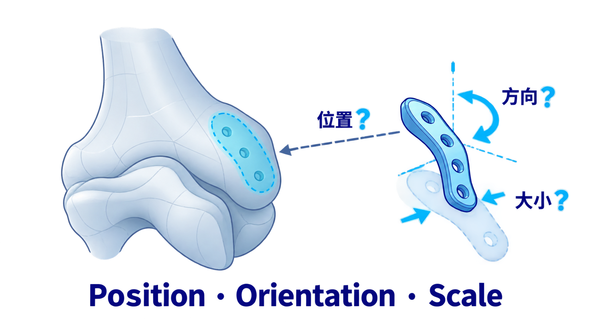
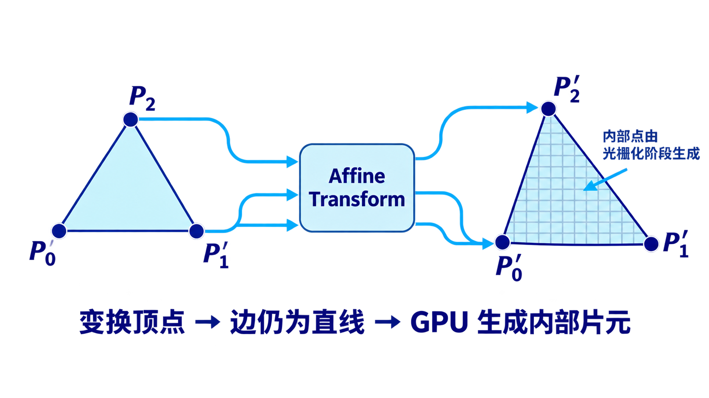
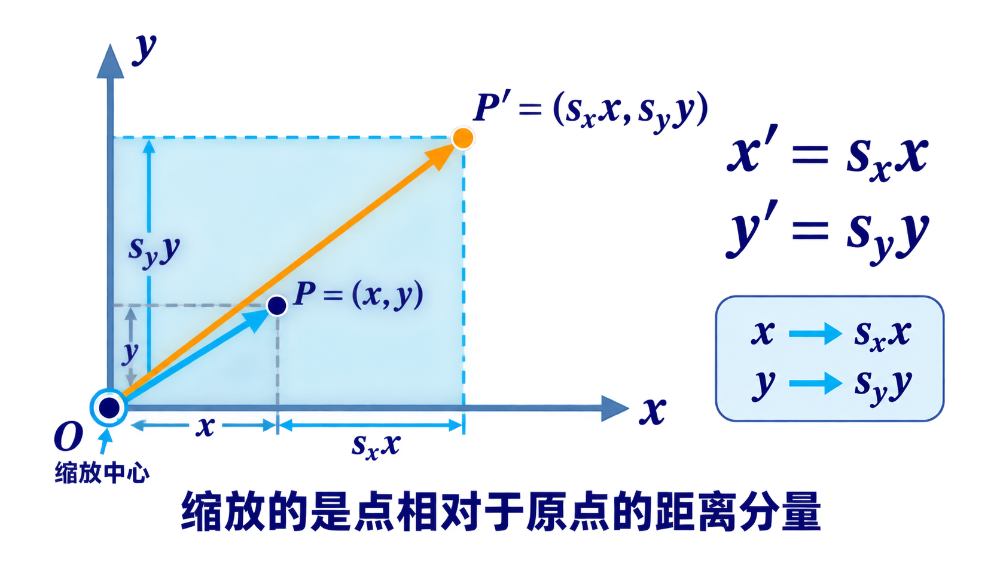
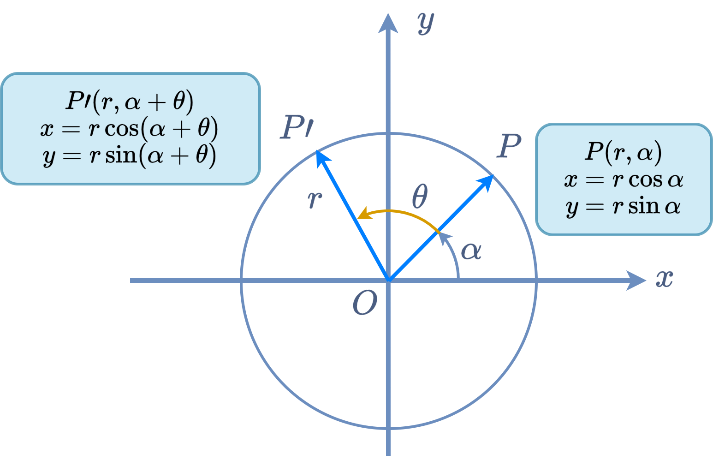
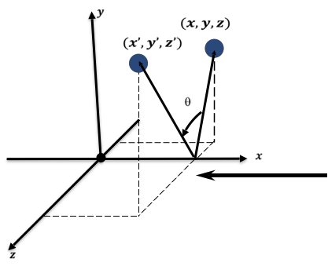
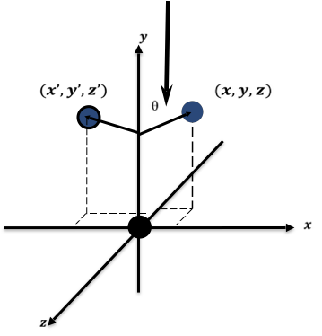
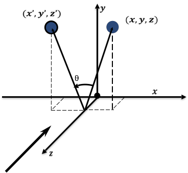

仿射变换 · 刚体变换 · 平移矩阵 · 旋转矩阵 · 缩放矩阵
在三维医学场景中，虚拟器械或植入物模型通常先定义在自己的局部坐标系中。如何将虚拟模型放置到正确的位置和姿态？

如果模型已经加载进程序，但没有对准目标区域，你认为需要调整哪些几何属性？
目标点在哪里？
Translation目标轴向如何对齐？
Rotation模型大小是否匹配？
Scaling复杂模型由大量顶点构成。只要理解一个点或一个简单形体如何变化，就能推广到整个网格。
变换可以看成一个函数：把一个点、一个向量或一组顶点映射到新的位置或状态。
仿射变换的重要性质是：直线仍映射为直线，线段仍映射为线段。
三角形的三个顶点变换后，三角形内部点可由光栅化阶段继续生成。

说“刚体”时，重点不是对象材质，而是变换前后对象内部的相对几何关系是否保持不变。
对象像一个整体被移动或转动。
距离、角度、形状、体积保持不变。
Translation + Rotation对象内部相对几何关系发生改变。
大小、比例、形状或局部结构可能变化。
Scaling / Shearing / Deformation请判断下列操作属于刚性变换，还是非刚性/一般仿射变换。
平移由位移向量决定。所有点获得同一个位移，因此对象的位置改变，但方向、大小和形状保持不变。
位移向量：\(\mathbf{t}=(t_x,t_y)\)。
位移向量：\(\mathbf{t}=(t_x,t_y,t_z)\)。
如果模型中有100万个顶点，平移时每个点获得的位移是否相同？这说明平移是否会改变形状？
普通\(2\times2\)线性矩阵只能产生\(x,y\)的线性组合；而平移还需要额外的常数项。
没有办法直接产生独立于\(x,y\)的\(t_x,t_y\)。
因此需要增加一个固定分量，让矩阵乘法“带入”常数项。
建立目标代数方程，从上到下按行展开，从左到右匹配对应项系数，严格确定 9 个矩阵元素。
小结：增补的第三维坐标 \(w=1\) 充当了“常数载体”，使非线性的平移巧妙转化为线性矩阵乘法。
沿用逐行系数匹配的逻辑，三维齐次平移自然扩展为 4×4 矩阵，并呈现出优美的分块代数结构。
• 前 3 行分别独立对 \(x, y, z\) 施加对应的位移分量 \(t_x, t_y, t_z\)。
• 第 4 行保持为 \([0, 0, 0, 1]\)，维系刚体变换后的齐次标度 \(w'=1\)。
几何意义：无论二维还是三维，平移信息均精确落在增补的最后一列。
若作用于方向向量 \(\mathbf{v}=[v_x,v_y,v_z,0]^T\)，由分块乘法：\(\mathbf{T}\mathbf{v} = \begin{bmatrix}\mathbf{I} & \mathbf{t} \\ \mathbf{0} & 1\end{bmatrix}\begin{bmatrix}\mathbf{v} \\ 0\end{bmatrix} = \begin{bmatrix}\mathbf{I}\mathbf{v} + \mathbf{t}\cdot 0 \\ 0 + 1\cdot 0\end{bmatrix} = \begin{bmatrix}\mathbf{v} \\ 0\end{bmatrix}\)。自由向量无固定起点，平移零影响！
同一个平移矩阵 \(\mathbf{T}\) 作用于下面哪一个对象时，会产生位置偏移？
缩放不只是“变大/变小”，其本质是改变点相对于缩放中心的距离分量；默认以原点为不动点。

每个坐标分量独立乘以缩放因子。原点 \(O(0,0)\) 缩放后依然为 \((0,0)\)，是变换的不动点（缩放中心）。
• 均匀缩放 (\(s_x = s_y = s_z\))：各向等比，保持几何外形相似，无纵横形变。
• 非均匀缩放 (\(s_x \ne s_y\))：各轴向比例独立，会改变纵横比并导致形状拉伸变形。
以原点为不动点时，缩放矩阵为纯对角结构，各主对角元独立控制对应维度的缩放比例。
• 主对角线直接缩放 \(x, y\) 坐标，不产生项间交叉（无旋转拉剪）。
• 最后一列均为 0，无常数平移位移；最后一行维持齐次权重 \(w'=1\)。
• 分块对照：平移矩阵改最后一列，缩放矩阵改主对角块 \(\mathbf{S}_{3\times 3}\)。
• 逆矩阵：只要 \(s_i \ne 0\)，\(\mathbf{S}^{-1} = \operatorname{diag}(s_x^{-1}, s_y^{-1}, s_z^{-1}, 1)\)。
如果希望围绕模型中心 \(C\) 缩放，不能直接使用以原点为中心的 \(S\)。
如果植入物模板以自身中心缩放，而不是以患者坐标原点缩放，为什么必须使用前后两次平移？
先研究点 \(P(x,y)\) 绕原点逆时针旋转 \(\theta\)。旋转保持原点距离不变，只改变方向角。

点 \(P(x,y)\) 到原点距离为 \(r\)，与 \(X\) 轴正向夹角为 \(\alpha\)。
距离 \(r\) 保持恒定不变，角度增至 \(\alpha+\theta\)。目标：展开并消去参数 \(r, \alpha\)。
利用三角和角公式消去参数 \(r\) 与 \(\alpha\)，得到线性方程并无缝升维为 3×3 齐次形式。
• 结构特征：左上角承载纯平面旋转；第 3 列为 0，绕原点无位移。
• 逆变换（正交性）：旋转 \(-\theta\) 即为逆操作，逆矩阵直接等于转置： \[ \mathbf{R}^{-1}(\theta) = \mathbf{R}(-\theta) = \mathbf{R}^T(\theta) \]
二维平面内绕原点旋转，可以看作三维空间中绕 \(Z\) 轴旋转：\(x,y\) 发生旋转，\(z\) 坐标严格保持不变。
旋转轴上的坐标 \(z\) 不发生改变，垂直于旋转轴的 \(X\)-\(Y\) 平面内执行标准二维旋转。
第 3 行与第 3 列为 \([0,0,1,0]\)，精确锁定 \(z\) 分量与齐次标度不变。
三维旋转必须明确旋转轴与正方向。不同旋转轴对应不同的不变分量，正旋转角 \(\theta\) 由右手定则严格决定。

从 \(+X\) 轴看向原点，由 \(Y\to Z\) 为逆时针正向（\(x\) 保持不变）。

从 \(+Y\) 轴看向原点，由 \(Z\to X\) 为逆时针正向（注意符号翻转！）。

从 \(+Z\) 轴看向原点，由 \(X\to Y\) 为逆时针正向（与标准二维旋转一致）。
很多医工任务不是“绕世界原点旋转”，而是希望器械围绕目标入口点、关节中心或模型中心旋转。
这个公式已经不是单个基本变换，而是多个矩阵的组合。下一课要重点讨论：为什么顺序不能交换？
让AI推导二维点绕原点逆时针旋转 \(\theta\) 的矩阵，并要求它解释 \(\sin\theta\) 项的正负号。
分别调整平移 (T)、旋转 (R)、缩放 (S) 参数，实时观察顶点坐标、\(4\times 4\) 齐次矩阵与三维形体姿态响应。
直观操控三维几何体，同步观察 \(4\times 4\) 矩阵数值动态变化与顶点变换计算，打通代数矩阵与空间几何直觉。
虚拟器械的定位，本质是给同一组顶点施加不同的变换矩阵。
Translation决定对象放到哪里。
Rotation决定轴向如何对齐。
Scaling决定模型大小是否匹配。
本课从虚拟器械定位问题出发，建立了从概念到矩阵的基本变换框架。
变换是点到点、向量到向量的映射；仿射变换保持直线结构。
刚性变换保持距离、角度、形状和体积；非刚性变换可能改变大小、比例或形状。
平移、缩放、旋转都可以在齐次坐标中统一为矩阵乘法。
将虚拟器械沿目标通道方向对齐，主要对应哪类变换？